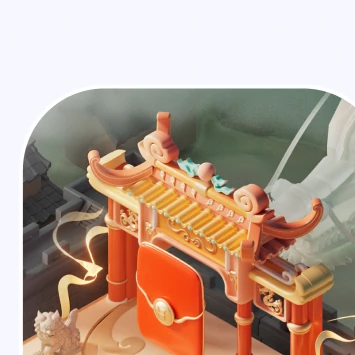
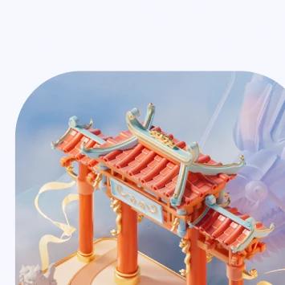
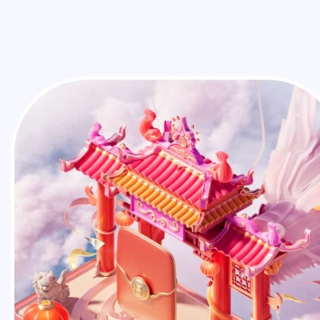
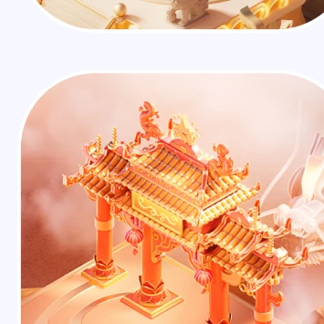
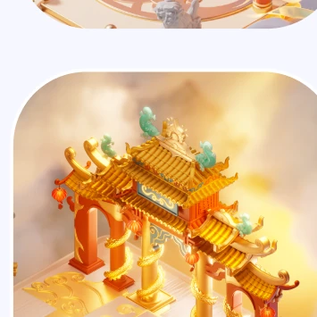

KLOOK & US
PROJECTS/
KLOOK
INTERACTIVE
EXPERIENCE
Project Overview
A campaign case page built around travel energy, soft perspective, and scroll-held media moments.
All projects ->策略
把“春节视觉好看”推进为“用户愿意探索、愿意分享、后续可复用”的活动系统。
系统
01 / 差异
春节活动容易落成红金氛围图。这个项目先把五个地域关卡拆开，让每个会场有自己的建筑、路径和色彩记忆。
02 / 创意
不是平铺入口，而是把用户带进“地图会场”。IP、路径和奖励节点共同承担探索感。
03 / 证据
这里适合补一张数据/业务目标/用户路径推导图，能把“为什么这样做”讲得更有份量。
Loong IP from character to reward.
角色先作为整套活动的情绪锚点出现，再被拆到线稿、色稿、成品和卡片里，最后落到手办包装和奖励物件上。


Reward object, not decoration.
手办和卡片负责把 IP 从屏幕里的活动角色，转成用户能理解、能领取、能传播的实体记忆点。
Map Logic from route to world.
把旧式棋盘路径升级成全景会场：用户仍然能快速理解路线，但页面可以容纳品牌露出、奖励节点、NPC 和更复杂的互动层级。
-
01
旧方案只解决“走格子”，沉浸感和节日价值感不足。旧问题：棋盘路径只能说明任务怎么走，却承载不了品牌会场、奖励关系和节日氛围，用户缺少继续探索的理由。 -
02
新方案把路径、奖励、品牌商铺和角色引导放进同一张地图。新方案：把路径节点、商铺露出、角色引导和奖励反馈合进全景地图，让用户仍按路线推进，但感知从“走格子”变成“逛会场”。 -
03
线稿阶段先做信息分层，保证复杂场景压到手机后仍然能读。结果：地图成为活动信息总控，既能引导任务和转化，也能放大品牌露出；复杂场景压到手机视窗后仍然保持可读。


Map Setting scene proof.
第二章补地图设定本身：先看完整预览，再把道路、龙门和场景细节拆到线稿层，说明这张地图不是单张氛围图，而是可被手机视窗、任务节点和奖励路径反复验证的系统。


Dragon Gate Gradient.
五张地图需要一眼属于同一个玩法，又不能只是换背景。龙门被拆成可复用的入口母题，再通过结构复杂度、色彩强度和奖励感逐级升级。
- WHY避免五张散图同一套龙门结构保证用户每进一关都知道“这里是任务入口”。
- GOAL制造进度感从轻量门型到完整建筑，让用户感觉难度、奖励和主会场价值在升级。
- METHOD结构不变，表现递进门型、台阶和圆形动线保持一致，材质、装饰和光效逐层加码。
- RESULT可复用的关卡资产龙门同时承担地图识别、奖励引导和最终分享画面的视觉锚点。






Five Map Venues one festival route.
五张地图单独释放出来横向浏览：地域建筑、路径长度、奖励节点和节日情绪都各自成立，同时保持同一套龙年会场规则。
五张地图最终进入同一个活动界面
线上效果图放在地图模块下方，作为从“地图设定”到“真实活动页面”的落地证据。

Poster System line to final.
海报单独拿出来讲：先看线稿和旧方案为什么不够强，再看色彩、主体和信息层级如何收敛到最终分享海报，最后展示完整海报组。


分享出口也要成体系
把右侧剩余海报集中展示，说明它们不是单张图，而是一组可延展的领奖和分享出口。
收尾画面负责留下记忆
收尾页把活动奖励、品牌符号和龙年祝福收束到一个可截图传播的结束画面。
IP
主 IP 承担春节亲和力，表情、动作、配饰负责把不同物料拉回同一世界观。
Map
五张长地图不是五张插画，而是五条路径：建筑、节点、奖励和地域氛围同步推进。
Mobile
移动端页面要把地图探索压缩到更短路径里，所以保留强主视觉和明确入口层级。
Data
这里可以补最终数据、AB 对比或上线截图，让结果区从“展示”变成“闭环”。
Project
System
Entering next project